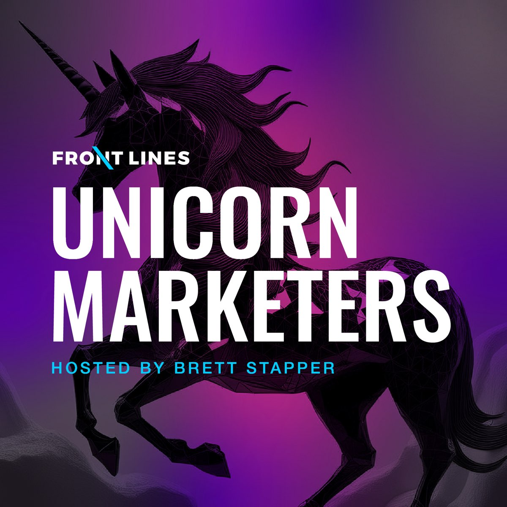
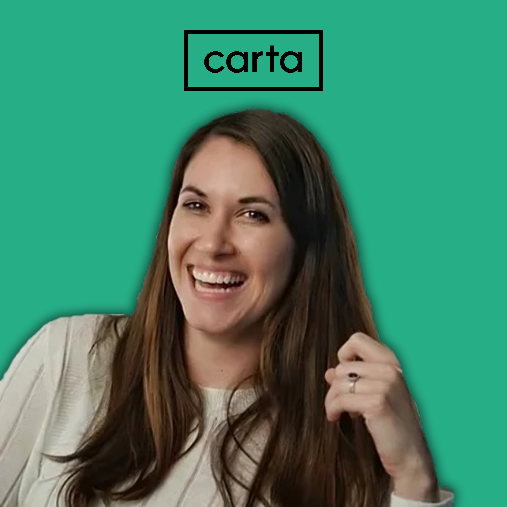

Ideas
Podcasts & conversations

Why taste starts with research, not vibes
Why taste starts with research, not vibes

Marketing as a form of capital allocation
Marketing as a form of capital allocation
A conversation with Angela Winegar
A conversation with Angela Winegar
Talks & research
TalkIntroducing PLG in a sales-led organization
Introducing PLG in a sales-led organization
A talk on Carta Launch and how product-led growth fits inside a sales-led business.
Explore the talk ↗